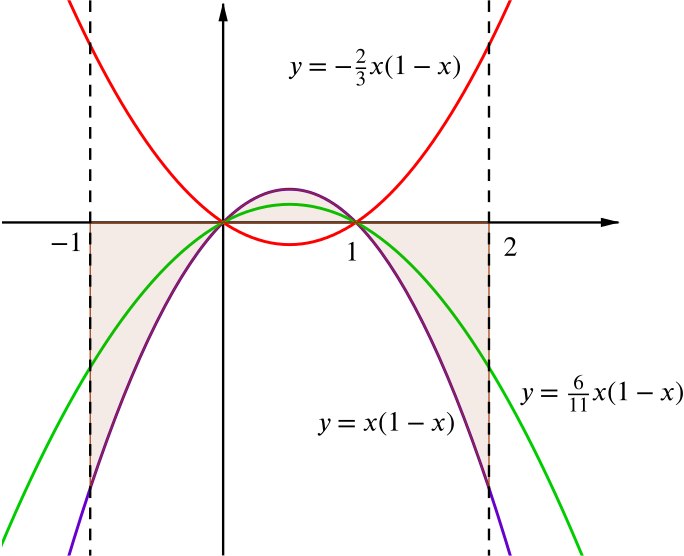
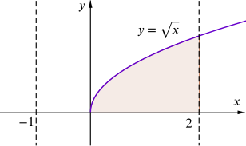
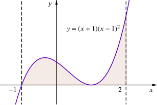

and we find that a=−23 satisfies the integral condition.
Why does a need to be negative? What does that mean geometrically?
We notice that f(x)=0 at x=0 and x=1 which are both within our interval, so the curve crosses the x-axis twice. Drawing a sketch will help us to think about the area condition – we will need to work out the integral in several parts.

The area will be given by
−∫0−1x−x2dx+∫10x−x2dx−∫21x−x2dx=116.
Note how we subtract the integrals for the parts of the curve that lie below the x-axis because these integrals have negative values.
The symmetry of the curve means that we actually only have to calculate two integrals.
So we need a=611 to satisfy the area condition.
This function is undefined for x<0 so we can’t integrate it over the whole interval or find a scale factor for the integral condition.
However, we can find the area under the curve by integrating from 0 to 2. It is
∫20x⎯⎯√dx=[23x3/2]20=432⎯⎯√

so a=342⎯⎯√=32⎯⎯√8 would scale the area as required.
To integrate this we will need to expand the brackets, giving f(x)=x3−x2−x+1.
For the area condition we need to consider where the integral has a negative value.
How many times does the curve cross the x-axis in the interval from −1 to 2?
As the graph is entirely above the axis, the same scale factor will work for the area condition as for the integral condition.

This time when we expand and integrate we find the interesting result that ∫2−12x3−3x2−3x+2dx=0. This will always be 0 whatever scaling we use.
Can you explain why this has happened?
Once we draw a sketch and think about the areas above and below the axis, we can find the area and hence meet the area condition using a=1681.
Note that we do not need to evaluate two integrals to find the area. Using the symmetry of the graph we can instead evaluate 2∫12−1f(x)dx.
This function is undefined at x=0 where there is a vertical asymptote. There is an infinite area between the curve and the x-axis. A definite integral is only properly defined if the function is continuous between the two limits, otherwise it is called an improper integral.
this is in fact absurd. We should always check that a function is continuous over the interval before evaluating a definite integral.
Can you think of some other functions which cannot be scaled to satisfy one or both of our conditions?
Any function which is undefined over part of the interval will be a problem for the integral condition.
Any function with a singularity (vertical asymptote) in the interval will be a problem, except in a few special cases.
When a function has rotational symmetry about the mid point of the interval, i.e. x=12, then the area above and below the axis will be equal. The integral will evaluate to 0 which cannot be scaled to 1 however hard we try! So the integral condition cannot be satisfied, but often the area condition can.
There are other cases with zero integral which are not symmetrical in this way. For instance, starting with a simple function like f(x)=x2−c we can find
∫2−1x2−cdx=[x33−cx]2−1
and choose a value of c which gives ∫2−1f(x)dx=0. Can you extend that to find other functions?
Are there any functions without singularities for which an area of 1 cannot be achieved?